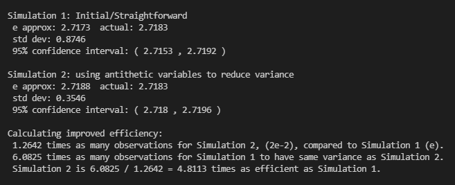

Some of my past projects! 💻
Shows a few iterations of the Koch Snowflake. As the number of iterations reach infinity, the perimeter approaches infinite but the area remains finite.
Accepts input for number of levels and angle between each branch. Interesting how placement of the draw statement inside the recursion affects the visualization.
Generates Sierpinksi's Triangle using chaos game: with a random point inside the triangle and a random corner, draw the midpoint. Repeat using the midpoint.
Circle collisions form a new circle that follows the Law of Conservation of Momentum in physics.
Two-player game where the goal is to make the opponent crash into the edge or a previous crossed path. Modeled after a game I used to play when when I was little.
Explores the concept of truly random points versus points that seem random but are not. Inspired by How Not to Be Wrong: The Power of Mathematical Thinking by Jordan Ellenberg.
Classic player vs. computer Pong game. The computer (right side) only moves when the ball is on their side, giving the player a slight advantage when the ball speeds up.
Gives the ideal spot to stand so that the moon appears behind a target object using input data and the moon cycle. My CSE 143 final project and first web app. Worked with Kavel Rao and Alek Metzelaar.
Approximating e using two simulations: a simple version, and a more complex version that uses antithesis variables to reduce data variance. Based off "Estimating the Value of e by Simulation" written by K. G. Russell.
Recursively solves the classic nQueens problem: given a n-by-n chess board, place n queens such that no queens attack each other.

The computer has a "dummy" difficulty that selects a random square and a "smart" difficulty that plays with optimal strategy. Was my final project for AP Computer Science in highschool.


Functions as a basic Excel spreadsheet. It can perform arithmetic operations and find the sum and average of a group of cells. It also deals with overflow content. Was a project for AP Computer Science.